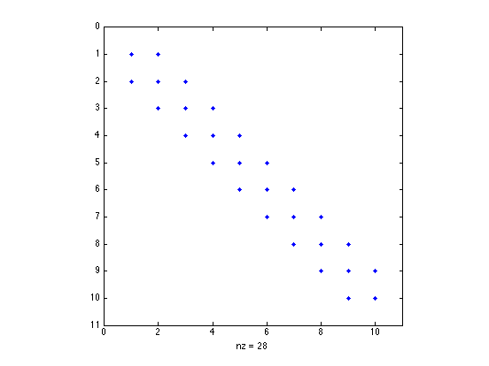
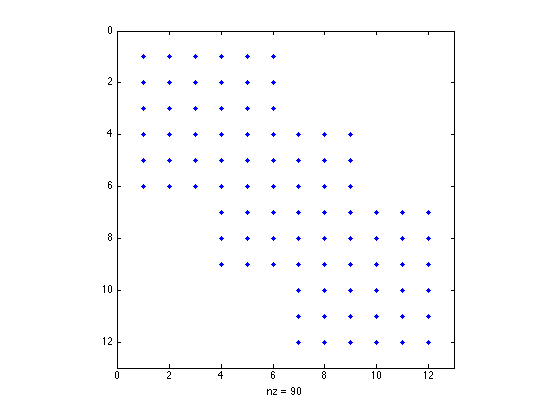
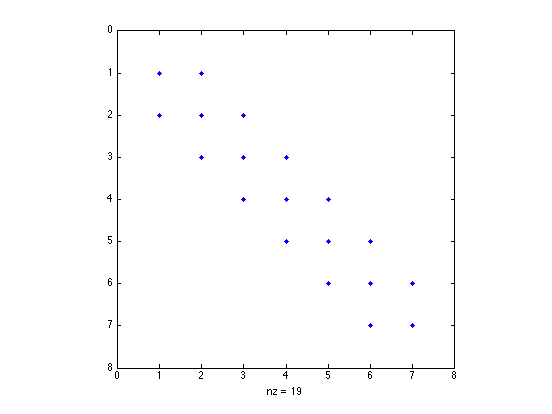
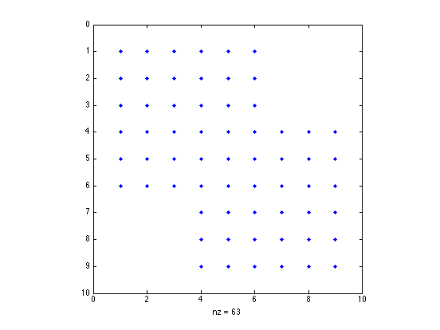
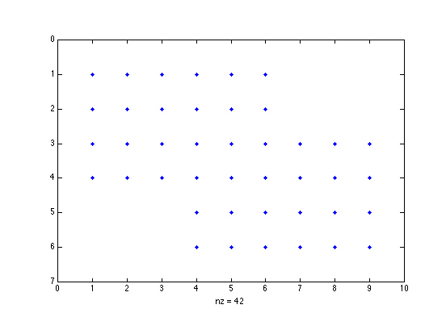
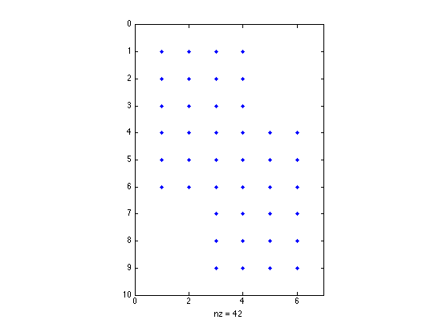

Contents
- A 10x10 tridiagonal matrix, with 2 on the diagonal, -1 on the off diagonal.
- A lower block bidiagonal matrix with replicated blocks
- A block tridiagonal matrix with replicated blocks
- A tridiagonal matrix with random elements
- A block tridiagonal matrix with distinct elements
- A block tridiagonal matrix with 2x3 fixed non-square blocks
- A block tridiagonal matrix with varying 3x2 non-square blocks
A 10x10 tridiagonal matrix, with 2 on the diagonal, -1 on the off diagonal.
A = blktridiag(2,-1,-1,10); % The sparsity pattern is correct spy(A) % and the elements are as designated full(A)
ans =
2 -1 0 0 0 0 0 0 0 0
-1 2 -1 0 0 0 0 0 0 0
0 -1 2 -1 0 0 0 0 0 0
0 0 -1 2 -1 0 0 0 0 0
0 0 0 -1 2 -1 0 0 0 0
0 0 0 0 -1 2 -1 0 0 0
0 0 0 0 0 -1 2 -1 0 0
0 0 0 0 0 0 -1 2 -1 0
0 0 0 0 0 0 0 -1 2 -1
0 0 0 0 0 0 0 0 -1 2
 A lower block bidiagonal matrix with replicated blocks
% with 2x2 blocks of ones on the main diagonal, and % 2x2 blocks of twos on the sub-diagonal A = blktridiag(ones(2),2*ones(2),zeros(2),5); spy(A) full(A)
ans =
1 1 0 0 0 0 0 0 0 0
1 1 0 0 0 0 0 0 0 0
2 2 1 1 0 0 0 0 0 0
2 2 1 1 0 0 0 0 0 0
0 0 2 2 1 1 0 0 0 0
0 0 2 2 1 1 0 0 0 0
0 0 0 0 2 2 1 1 0 0
0 0 0 0 2 2 1 1 0 0
0 0 0 0 0 0 2 2 1 1
0 0 0 0 0 0 2 2 1 1

A block tridiagonal matrix with replicated blocks
Amd = reshape(1:9,3,3); Asub = reshape(11:19,3,3); Asup = reshape(21:29,3,3); A = blktridiag(Amd,Asub,Asup,4); spy(A) full(A)
ans =
1 4 7 21 24 27 0 0 0 0 0 0
2 5 8 22 25 28 0 0 0 0 0 0
3 6 9 23 26 29 0 0 0 0 0 0
11 14 17 1 4 7 21 24 27 0 0 0
12 15 18 2 5 8 22 25 28 0 0 0
13 16 19 3 6 9 23 26 29 0 0 0
0 0 0 11 14 17 1 4 7 21 24 27
0 0 0 12 15 18 2 5 8 22 25 28
0 0 0 13 16 19 3 6 9 23 26 29
0 0 0 0 0 0 11 14 17 1 4 7
0 0 0 0 0 0 12 15 18 2 5 8
0 0 0 0 0 0 13 16 19 3 6 9
 A tridiagonal matrix with random elements
Amd = rand(1,1,7); Asub = rand(1,1,6); Asup = rand(1,1,6); A = blktridiag(Amd,Asub,Asup); spy(A) full(A)
ans =
0.75469 0.50596 0 0 0 0 0
0.95974 0.27603 0.69908 0 0 0 0
0 0.34039 0.6797 0.8909 0 0 0
0 0 0.58527 0.6551 0.95929 0 0
0 0 0 0.22381 0.16261 0.54722 0
0 0 0 0 0.75127 0.119 0.13862
0 0 0 0 0 0.2551 0.49836
 A block tridiagonal matrix with distinct elements
Amd = reshape(1:27,[3 3 3]); Asub = reshape(101:118,[3 3 2]); Asup = reshape(201:218,[3 3 2]); A = blktridiag(Amd,Asub,Asup); spy(A) full(A)
ans =
1 4 7 201 204 207 0 0 0
2 5 8 202 205 208 0 0 0
3 6 9 203 206 209 0 0 0
101 104 107 10 13 16 210 213 216
102 105 108 11 14 17 211 214 217
103 106 109 12 15 18 212 215 218
0 0 0 110 113 116 19 22 25
0 0 0 111 114 117 20 23 26
0 0 0 112 115 118 21 24 27
 A block tridiagonal matrix with 2x3 fixed non-square blocks
Amd = rand(2,3); Asub = 2*ones(2,3); Asup = ones(2,3); A = blktridiag(Amd,Asub,Asup,3); spy(A) full(A)
ans =
Columns 1 through 7
0.14929 0.84072 0.81428 1 1 1 0
0.25751 0.25428 0.24352 1 1 1 0
2 2 2 0.14929 0.84072 0.81428 1
2 2 2 0.25751 0.25428 0.24352 1
0 0 0 2 2 2 0.14929
0 0 0 2 2 2 0.25751
Columns 8 through 9
0 0
0 0
1 1
1 1
0.84072 0.81428
0.25428 0.24352
 A block tridiagonal matrix with varying 3x2 non-square blocks
Amd = reshape(1:18,[3 2 3]); Asub = reshape(101:112,[3 2 2]); Asup = reshape(201:212,[3 2 2]); A = blktridiag(Amd,Asub,Asup); spy(A) full(A)
ans =
1 4 201 204 0 0
2 5 202 205 0 0
3 6 203 206 0 0
101 104 7 10 207 210
102 105 8 11 208 211
103 106 9 12 209 212
0 0 107 110 13 16
0 0 108 111 14 17
0 0 109 112 15 18
